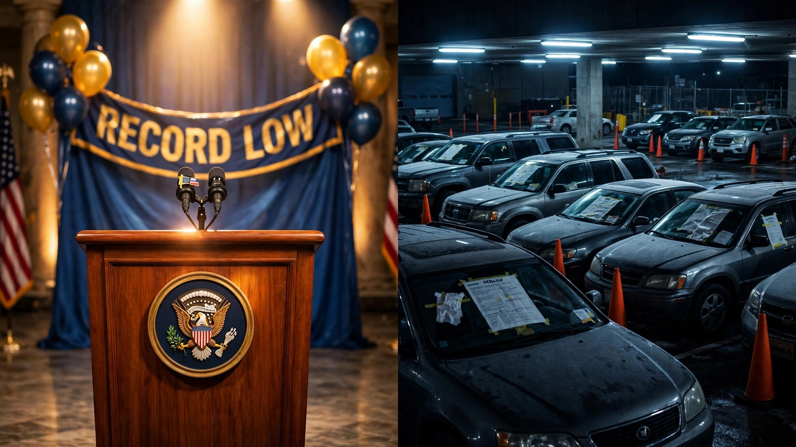

NHTSA Called 2025 the Safest Year in History. Then It Investigated 3 Million Vehicles in 8 Weeks.

Somewhere inside the Department of Transportation, there is a press release from April bragging about 36,640 traffic deaths in 2025 as though that number deserves confetti. A 6.7% drop from 2024. A fatality rate of 1.10 per 100 million vehicle miles traveled, the second-lowest in recorded history. Secretary Duffy called it evidence that "American roads are safer." NHTSA Administrator Morrison doubled down.
One hundred people per day. That is what a record low looks like in the United States of America, where the denominator is three-point-three trillion miles driven and the numerator is a mountain of caskets that nobody in Washington seems to find objectionable because the pile is technically shorter than last year's.
Then NHTSA got back to work, and the work paints a different portrait of the fleet that produced that record. Between early June and July 31, the agency recalled or opened defect investigations into more than 3.2 million vehicles across six high-profile actions, covering fire-prone Jeep Wranglers and Gladiators (1,076,999 vehicles whose power steering wiring can ignite while the vehicle sits parked in your garage), Ford Navigators and Expeditions and Explorers that roll away because their transmissions forget what "park" means (741,195 units), Tesla Model 3s and Model Ys whose front suspension links detach at highway speed with no warning whatsoever (1.2 million under investigation after 156 complaints and zero documented crashes), and a Hyundai Palisade whose motorized rear seat crushed a two-year-old girl in Ohio, prompting a 61,000-unit recall and a stop-sale order on one of Korea's flagship family SUVs.[1][2][3][4]
Cross-reference those nameplates against FARS and the picture curdles further. Over the past decade, the occupants of these ten models alone account for 20,641 deaths in fatal crashes, roughly 2,064 per year, which represents about 5.6% of the annual body count from just ten vehicle names on a roster of hundreds.[5] The Ford F-150, named in the rollaway recall for its 2021 model year, leads with 9,194 occupant deaths and involvement in 20,066 fatal crashes where it was not always the vehicle that paid the price. The Wrangler, now subject to a "park outside and away from structures" warning, accumulated 1,842 of its own occupant deaths while appearing in 3,718 fatal crash events.
The counterargument writes itself, and it is correct: the recalls are the system functioning. Identifying defects and ordering fixes is how you bend the curve from 40,000 toward 36,000 toward something eventually less obscene. NHTSA's ESC mandate alone has saved an estimated 7,000 lives since 2012. NHTSA is not being hypocritical; it is being honest about two facts simultaneously, one of which sounds like a celebration and the other like an indictment, because both are true at the same time.
But the juxtaposition reveals something the press release obscured. The fleet that delivered the "safest year ever" is riddled with known, unresolved design failures, and the vehicles being pulled back into dealerships right now were on the road contributing to that record while their defects went undetected or uninvestigated. Every one of the 1.2 million Teslas in the new suspension probe was eligible to be counted as part of the record low fleet, bearing a latent defect that could separate the front wheel assembly from the vehicle without warning at freeway speed. Every one of the million-plus Wranglers with combustible wiring was a "safe" vehicle right up until it was not.
And that is the existential problem with celebrating traffic safety in America. What NHTSA produced is not a testament to engineering excellence or regulatory triumph. It is a snapshot of what happens when the oldest, deadliest vehicles finally rust off the road faster than new defects can replace them, a fleet-attrition dividend dressed up as progress while the actual vehicles on sale today carry defects serious enough to warrant "Do Not Drive" and "Park Outside" advisories. The safest year in American history killed a hundred people a day, and the vehicles that made it possible are being recalled because they catch fire, roll away, collapse, and crush children. Congratulations.
Sources & References
- NHTSA, “2025 Traffic Death Estimates & 2024 FARS,” April 2026. nhtsa.gov
- Reuters, “Stellantis recalls over 1 million US vehicles over power steering defect, NHTSA says,” June 9, 2026. reuters.com
- Reuters, “US auto safety regulator probes 1.2 million Tesla vehicles over suspension failure risks,” July 31, 2026. reuters.com
- Reuters, “Ford to recall over 741,000 US vehicles due to park system issue, NHTSA says,” June 30, 2026. reuters.com
- NHTSA, Fatality Analysis Reporting System (FARS), 2014–2023. nhtsa.gov